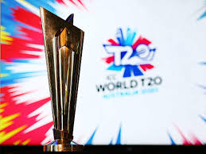
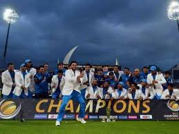
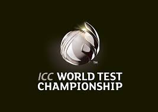

1.World-Cup

The Cricket World Cup (officially known as ICC Men's Cricket World Cup)[1] is the international championship of One Day International (ODI) cricket. The event is organised by the sport's governing body, the International Cricket Council (ICC), every four years, with preliminary qualification rounds leading up to a finals tournament. The tournament is one of the world's most viewed sporting events and is considered the "flagship event of the international cricket calendar" by the ICC.
The first World Cup was organised in England in June 1975, with the first ODI cricket match having been played only four years earlier.
2.T20 World-Cup

The 2021 ICC Men's T20 World Cup is scheduled to be the seventh ICC Men's T20 World Cup tournament,[3][4] scheduled to be played in October and November 2021 in India.[5][6] Originally, the tournament was to be held in Australia from 18 October to 15 November 2020.[7][8][9] However, in July 2020, the International Cricket Council (ICC) confirmed that the tournament had been postponed until 2021, due to the COVID-19 pandemic.[10][11][12] In August 2020, the ICC also confirmed that India would host the 2021 tournament.
3. Champions Trophy

The ICC Champions Trophy was a One-Day International (ODI) cricket tournament organised by the International Cricket Council (ICC), second in importance only to the 50-over World Cup.
Official Trophy
It was inaugurated as the ICC KnockOut Tournament in 1998 and has been played approximately every four years since. Its name was changed to the Champions Trophy in 2002
4.World Test Championship

The 2019–21 ICC World Test Championship is the inaugural edition of the ICC World Test Championship of Test cricket.[1] It started from 1 August 2019 with the first Test of the 2019 Ashes series,[2] and will finish with a final at Lord's in England in June 2021.[3]
It came nearly a decade after the International Cricket Council (ICC) first approved the idea for a World Test Championship in 2010, and following two cancelled attempts to hold the inaugural competition in 2013 and 2017.
Made By:Aditya Khajuria